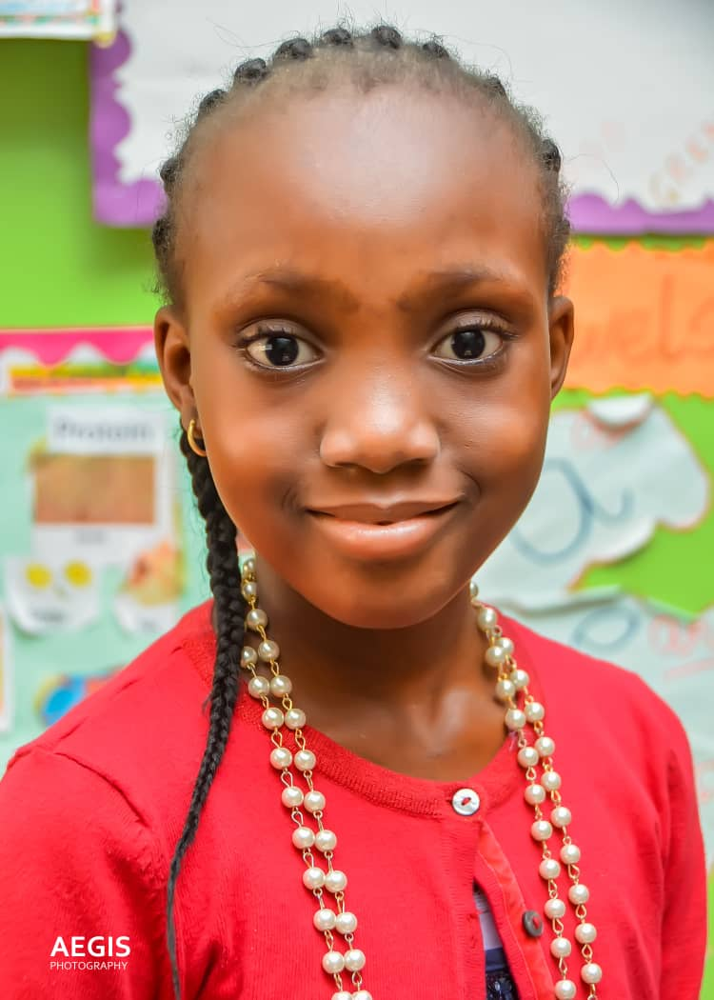
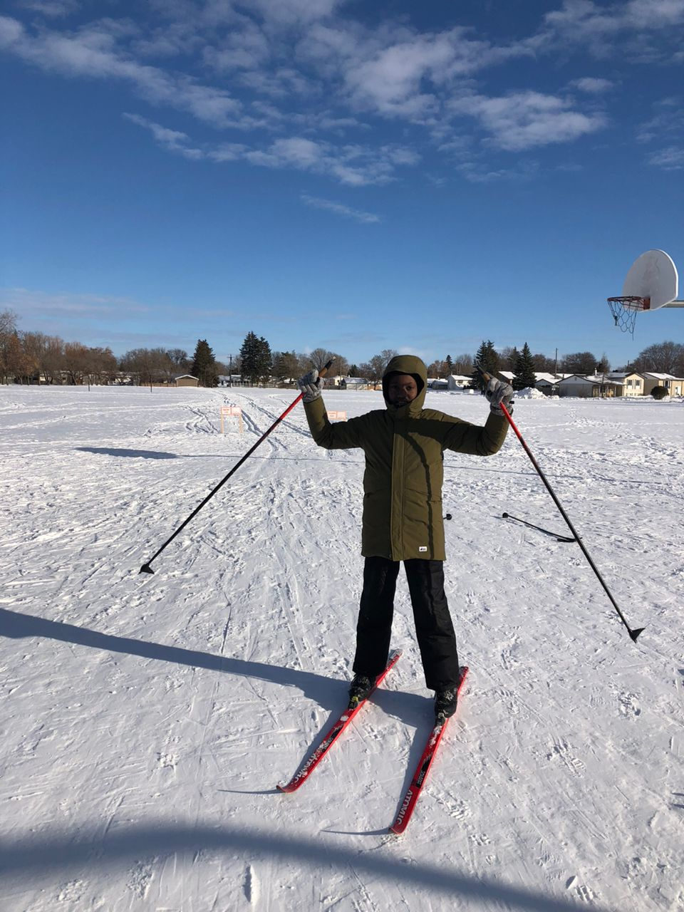
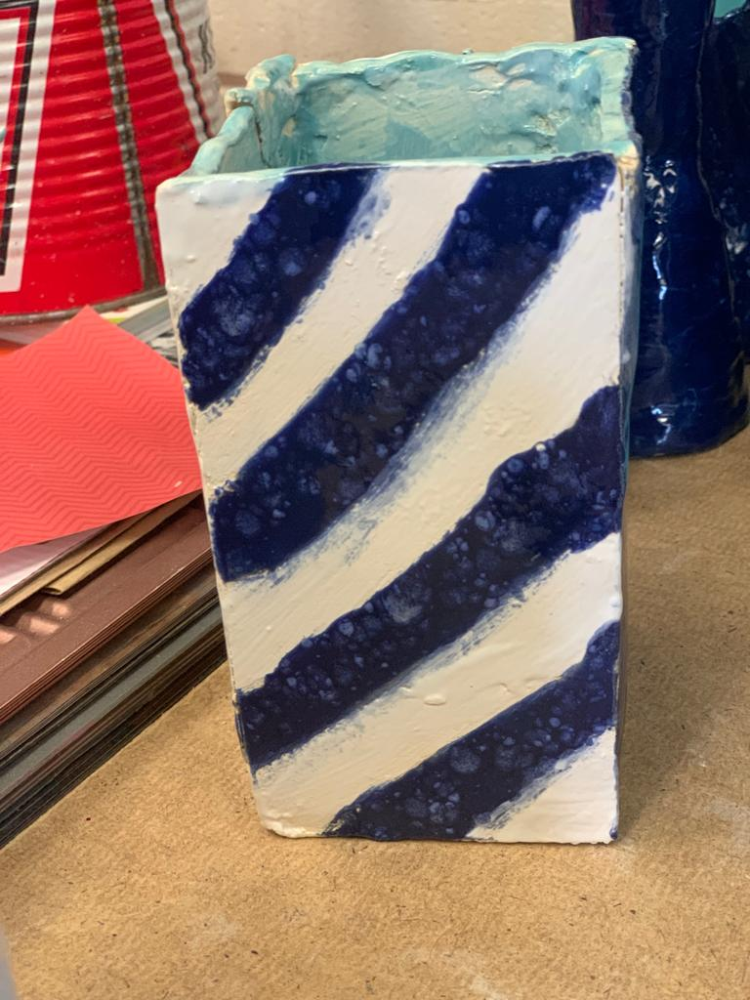
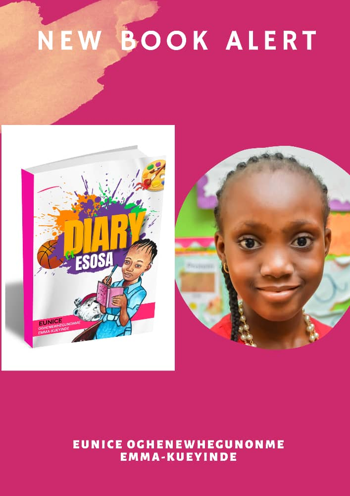

Eunice Emma-Kueyinde
Eunice is a talented 13 year old Nigerian author who currently resides in Canada. She was born on 13th March 2010 to a family of devout christians. She has two siblings, a brother and a sister, she is the youngest child. Her hobbies include: basketball, cycling, writing, skating, skiing, pottery, photography and cooking. She is currently working on another book.
Her Works
 Books
Her first book The Diary of Esosa has been published and she it currently writing another book.
